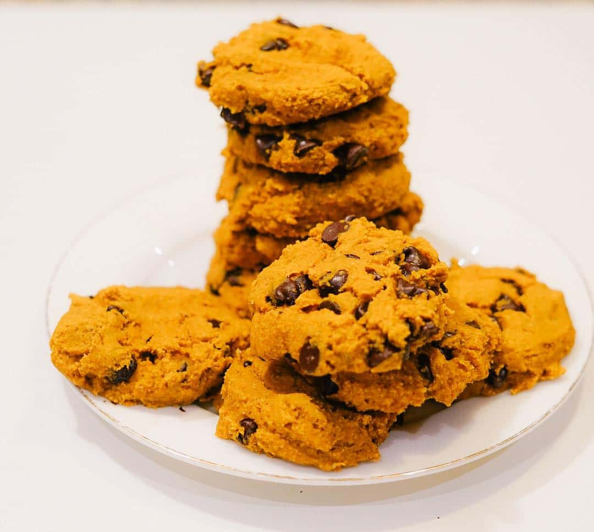

Taylor Swift's Pumpkin Chocolate Chip Cookies, Veganized

This recipe is from PlantYou.
Description
Ingredients
- 1 cup (2 sticks) unsalted butter, softened
- 1 cup white sugar
- 1 cup light brown sugar
- 2 large eggs
- 1 tsp vanilla extract
- 1 cup canned pumpkin puree
- 3 cups all-purpose flour
- 2 tsp baking soda
- 1/2 tsp salt
- 1 tsp ground cinnamon
- 1/2 tsp ground ginger
- 1/4 tsp ground nutmeg
- 1/4 tsp ground cloves
- 2 cups (12-ounce bag) milk chocolate chips, not semisweet
- 1 tsp pumpkin pie spice
Steps
- Preheat the oven to 350F and line a baking sheet with parchment paper.
- In a bowl, combine the wet ingredients, including the pumpkin, syrup and vanilla extract.
- In another bowl, add the flour, spices, baking powder and salt and whisk well. Add the wet ingredients to the dry ingredients and fold in the chocolate chips.
- Using a cookie scooper create 12 cookies (approximately 2 tablespoons of batter each) and place them 2 inches apart. Bake for 15 minutes as desired.